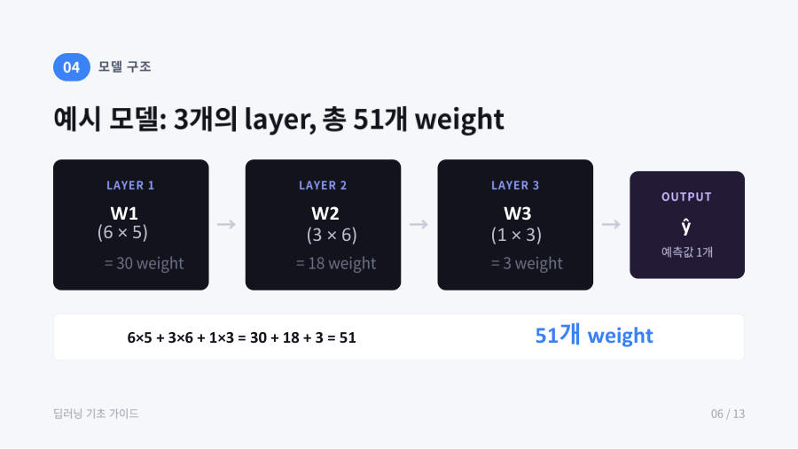
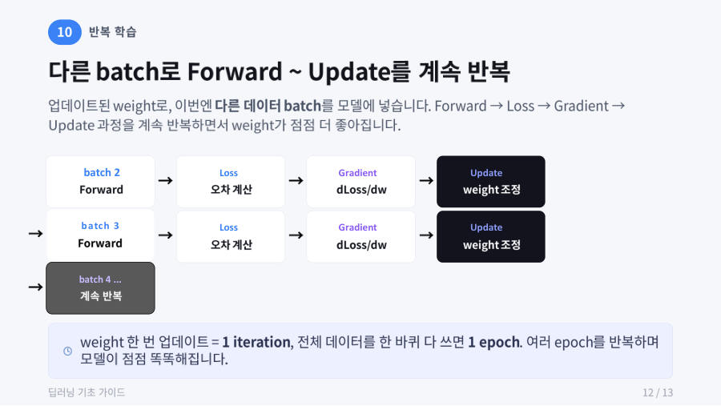
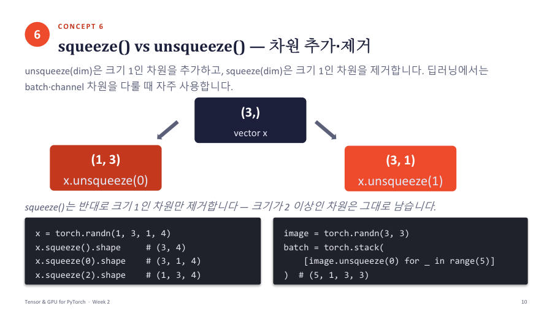
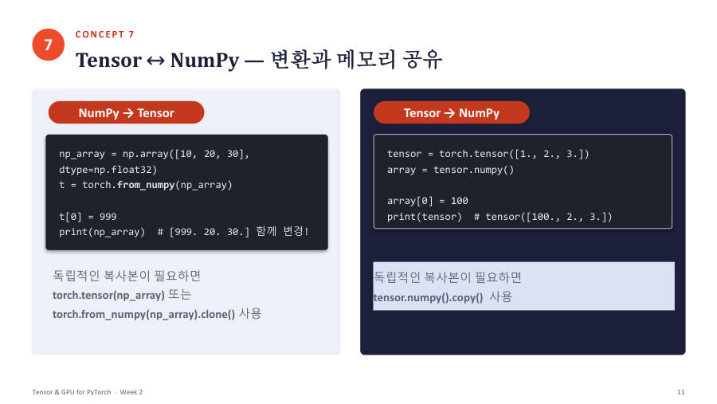
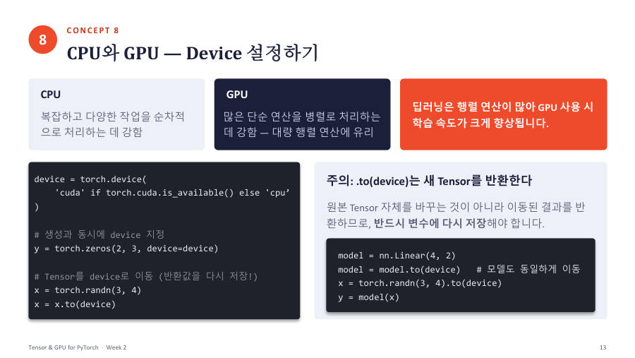
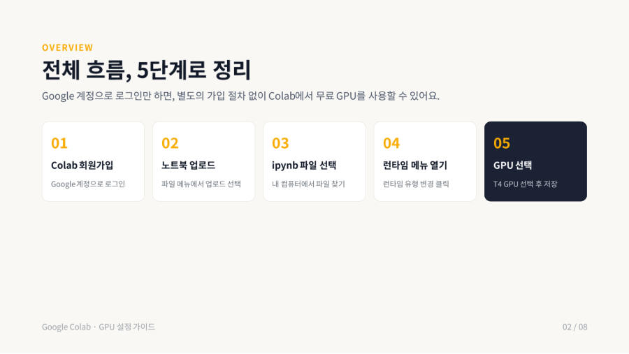
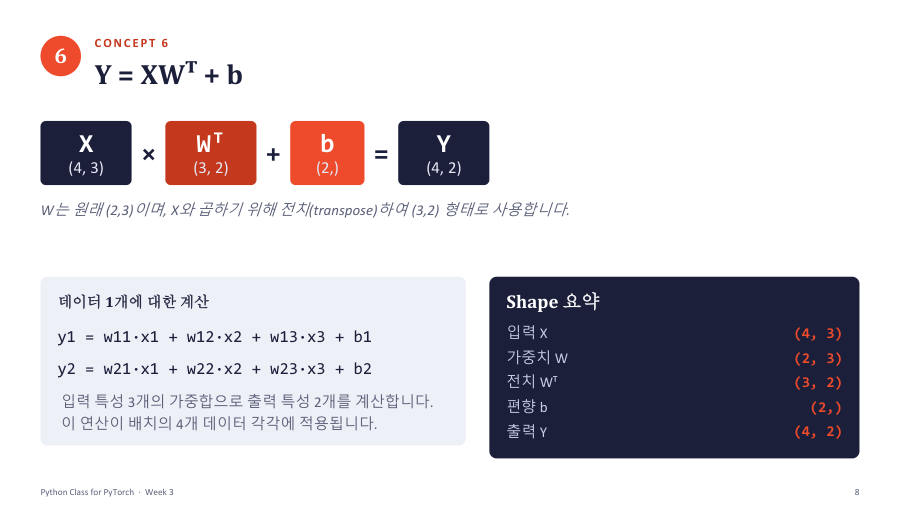
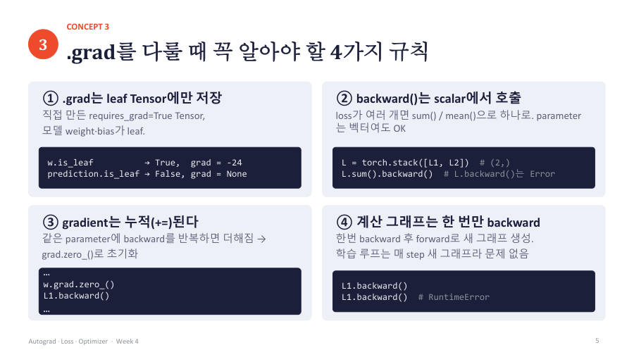
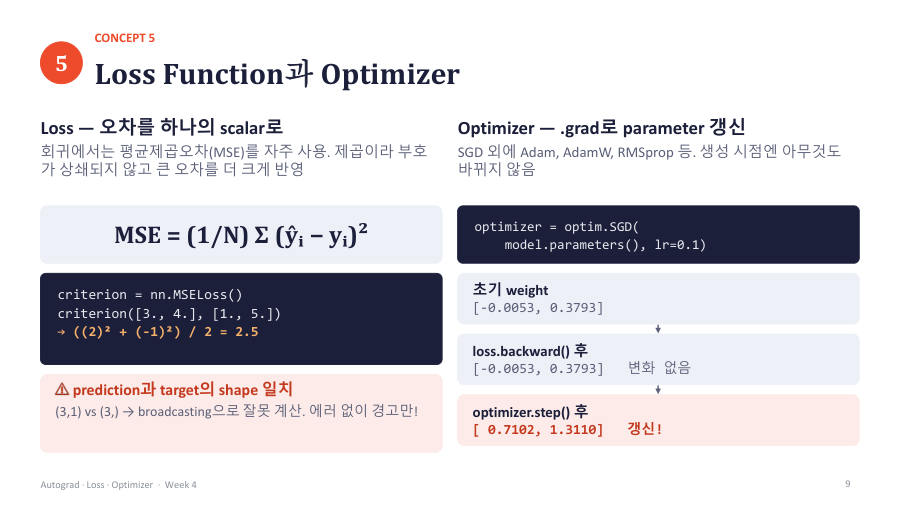
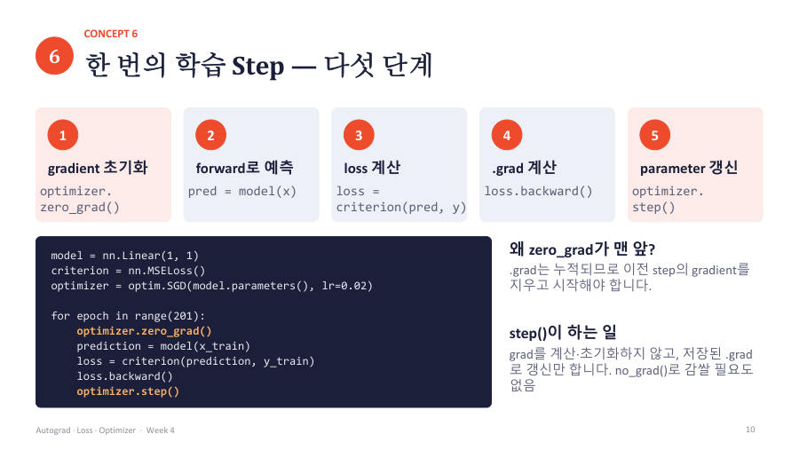

시작하기먼저 이 칸부터
빅데이터분석 중간고사2026-10-26(월) · 정확한 시각은 공지 확인 (월요일 수업은 12:30 시작)클로즈드북 · 시험지와 답안지(마킹)로 보는 객관식 약 20문항 · 60~70분 안팎(교수님도 시간 미정) · 개념 설명 / 코드 빈칸 채우기 / 결과 예측범위 — 2~5주차 자료 — Tensor·GPU, 클래스·nn.Module, Autograd·Loss·Optimizer·학습 5단계, Dataset·DataLoader(Week05는 앞 절반만 준비했다며 '여기까지가 범위'라고 함)
쓰는 법① 카드를 누르면 크게 열려요 ② 밑줄 친 낱말을 누르면 쉬운 뜻 ③ 옆으로 밀면 다음 장 칸 ④ 장 끝에서 "문제 풀기"
▶ 내 시간표 코스 (여기부터)오늘 2시간 30분 + 시험 전 2시간 · 체크하면서 따라가기
★ B+ 최단 코스시험에 나올 것만 순서대로 · 핵심 문제까지
시간 정말 없으면: 최소 코스제일 쉬운 설명으로 핵심만 약 1시간
▶ 첫 카드부터 시작처음이면 여기부터 순서대로
교수님 시험 힌트
- 시험은 클로즈드북 객관식이고 시험지와 답안지가 따로 나가며, 20문항 정도 낼 예정이다. 교수님은 문제를 낼 때 ChatGPT나 Claude 같은 AI의 도움을 받는다며, 학생도 PPT와 ipynb를 AI에 넣어 예상 문제를 뽑아 공부하면 비슷하게 나올 것이라고 했다 (7주차).
- 문제 유형은 세 가지 — 개념 설명, 코드 빈칸 삽입, 실행 결과 예측. 7주차에 샘플 5문제(슬라이싱 shape, 상속·오버라이딩, 모델 정의와 호출 과정, DataLoader 결과, 학습 함수 역할)를 직접 보여 주며 '이 문제가 나온다는 건 아니다'라고 했다.
- 샘플 2번처럼 보기를 하나하나 따져야 하는 '올바른 설명 고르기'는 교수님 본인도 싫어한다고 말했고, 복잡하게 내지는 않겠다는 취지로 말했다. 출력이 여러 개여도 샘플처럼 5지선다에서 고르는 형식이다.
- model(x)를 쓰면 왜 forward가 실행되는지(부모 nn.Module의 __call__), 그리고 nn.Module 상속 → super().__init__() → self에 layer 등록 → forward 구조는 '외우다시피' 알라고 3·4주차에 반복 강조했다. 6주차에는 이 정도 클래스 작성은 시험에 낼 수 있다는 뉘앙스도 있었다.
- gradient 값을 구하는 문제는 chain rule로 풀든 한 번에 미분하든 값만 맞으면 된다(6주차). backward는 grad를 계산·저장만 하고, 값을 바꾸는 건 step이며, grad는 누적되므로 zero_grad가 필요하다는 문장이 핵심이다.
자료 확인 — 바탕화면 파일과 주차
| 파일 | 실제 | 내용 |
|---|---|---|
| 빅분01.txt | 1주차 (09/07) | 녹취 · 오리엔테이션, 수업 소개 (3-2 폴더 1주차_녹취록과 같은 파일) |
| 빅분02.txt | 2주차 (09/14) | 녹취 · 주피터랩 사용법, Tensor 생성·연산·브로드캐스팅 (2주차_녹취록과 같은 파일) |
| 빅데이터03.txt | 3주차 (09/21) | 녹취 · squeeze/cat/stack, NumPy 변환, CPU/GPU, 파이썬 class, nn.Module (3주차_녹취록과 같은 파일) |
| 빅데이터04.txt | 4주차 (09/28) | 녹취 · 딥러닝 Training 과정 PPT, class 복습, __call__과 nn.Module, Autograd 도입 (4주차_녹취록과 같은 파일) |
| (5주차) | 5주차 (10/05) | 개천절 대체공휴일로 휴강. 파일 없음 |
| 빅데이터06.txt | 6주차 (10/12) | 녹취 · Autograd, chain rule, gradient 누적, nn.Parameter, 과제1·시험 날짜 공지 (6주차_녹취록과 같은 파일) |
| 빅데이터07.txt | 7주차 (10/19) | 녹취 · nn.Linear·Sequential, loss·optimizer, 학습 5단계, y=2x+1 학습, Dataset·DataLoader, 시험 방식 안내 (3-2 폴더에는 아직 없는 새 녹취) |
| Week02_Tensor_and_GPU (업데이트) 폴더·zip | 2주차 자료 | Tensor와 GPU 노트북·PDF·PPT·HTML (수업자료본 2주차 파일과 같음) |
| Week03_Class_for_PyTorch(업데이트) 폴더·zip | 3주차 자료 (6주차에 업데이트) | 파이썬 class와 nn.Module. W·B를 직접 만들고 x @ W.T + B로 계산하는 업데이트본 |
| 구글 Colab GPU 환경 사용법.pdf | 4주차 자료 | Colab에서 T4 GPU를 켜는 순서 (수업자료본 4주차 파일과 같음) |
| 딥러닝 모델 Training 과정.pdf | 4주차 자료 | 데이터 → forward → loss → gradient → update → 반복 (수업자료본 4주차 파일과 같음) |
| Week04_Autograd_Loss_Optimizer 폴더·zip | 6~7주차 자료 | Autograd, nn.Parameter, nn.Linear·Sequential, loss·optimizer, 학습 5단계 (6주차 수업자료와 같음, 7주차에 후반부 진행) |
| Week05_Dataset_DataLoader_Train_Validation(part1) 폴더·zip | 7주차 자료 (10/19) | Dataset·DataLoader·batch·epoch와 미니배치 선형회귀. 3-2 폴더에는 아직 없는 새 자료 |
| 딥러닝프로그래밍_중간고사 (문제샘플).docx | 7주차에 안내한 시험 샘플 | 5지선다 5문항 (슬라이싱 shape · 상속 · 모델 호출 과정 · DataLoader 결과 · 학습 함수의 역할) |
옆으로 밀면 첫 장 →
왕초보 코드 읽기2~4주차 · Week02/Week03 노트북(풀이포함) · 빅분02(2주차)·빅데이터03(3주차)·빅데이터04(4주차) 녹취카드 11장
코드 읽기의 기본 — 위에서 아래로, 화면에 나온 것만 결과코드(code)는 컴퓨터에게 시키는 일 목록이에요. 이 목록을 컴퓨터가 차례로 해 보는 것을 실행한다고 해요. 실행했을 때 화…✍ 시험 포인트코드확인 문제변수 — 이름표가 붙은 상자 ★★=는 "같다"가 아니라 "오른쪽 값을 왼쪽 상자에 넣어라"예요. 오른쪽을 먼저 계산하고, 그 결과를 왼쪽 이름표 상자에 넣어요…✍ 시험 포인트코드확인 문제숫자, 글자(문자열), 계산, 참과 거짓코드에 나오는 값은 크게 세 종류예요. 숫자, 글자, 참/거짓이에요.✍ 시험 포인트코드확인 문제리스트와 인덱스, 슬라이싱 ★★★ 시험 단골리스트(list)는 값을 대괄호 [ ]로 묶어 줄 세운 거예요. 칸마다 번호가 있고, 번호는 0부터 시작해요. 이 번호를 인덱…✍ 시험 포인트코드확인 문제함수 — 이름 붙은 작은 기계 (def, return) ★★함수(function)는 "재료를 넣으면 결과를 내주는 작은 기계"예요. 한 번 만들어 두면 이름만 불러서 계속 쓸 수 있어요…✍ 시험 포인트코드확인 문제반복 — for와 range, 그리고 들여쓰기 ★★for는 같은 일을 여러 번 되풀이하는 명령이에요. range(4)는 "0, 1, 2, 3"을 차례로 내주는 도구예요. 0부터…✍ 시험 포인트코드확인 문제조건 — if, elif, else와 한 줄 조건식if는 "조건이 맞을 때만 실행해라"예요. 조건이 틀리면 elif(그게 아니고 이것이 맞으면), 모두 틀리면 else(나머지…✍ 시험 포인트코드확인 문제import와 점(.) 표기 — 도구 상자에서 도구 꺼내기 ★★파이썬에는 남들이 만들어 둔 도구 상자(라이브러리, 또는 모듈)가 많아요. 쓰려면 먼저 import로 상자를 가져와요. 딥러닝…✍ 시험 포인트확인 문제자주 보이는 모양 몇 가지 (with, 짝 받기, 한 줄 반복)아래 모양은 읽는 법만 알아 두면 충분해요.✍ 시험 포인트확인 문제시험 코드 손으로 따라가기 — 5단계 요령 ★★★0-1부터 0-9까지 배운 것을 모아서, 어떤 코드든 이 순서로 따라가면 돼요.✍ 시험 포인트코드확인 문제이 장 3줄 요약✓ 이 장 문제 풀기읽은 다음 바로 확인코드 손으로 따라가기 훈련문제샘플.docx · Week02~05 노트북카드 9장
1단계. print와 변수 — 이름표 상자 값 따라가기각 단계는 세 칸이에요. ① 풀이 예시는 표가 다 채워져 있으니 눈으로 따라가세요. ② 빈칸 풀이는 표의 몇 칸이 ?로 가려져…✍ 시험 포인트코드확인 문제2단계. 리스트 번호와 슬라이싱 — 번호는 0부터, 끝 칸은 빠져요리스트(list)는 값을 한 줄로 늘어놓은 상자예요. [10, 20, 30]처럼 대괄호 안에 쉼표로 적어요. 각 칸의 번호(인…✍ 시험 포인트코드확인 문제3단계. for 반복 — 바퀴 표를 그려요for는 같은 일을 여러 번 시키는 문장이에요. 시료 3개를 하나씩 같은 방법으로 처리하는 실험과 같아요. 들여쓰기(앞쪽 공백…✍ 시험 포인트코드확인 문제4단계. 함수 호출 — 넣으면 돌려주는 작은 기계함수(function)는 이름을 붙여 둔 작은 기계예요. def 이름(재료):로 기계를 만들어 두기만 하고, 이름(값)처럼 부…✍ 시험 포인트코드확인 문제5단계. 텐서 shape 읽기 — 숫자 하나는 줄이고, 범위는 남겨요텐서(Tensor)는 숫자를 격자 모양으로 담은 상자예요. shape는 방향마다 칸이 몇 개인지를 적은 거예요. (2, 3)은…✍ 시험 포인트코드확인 문제6단계. nn.Linear(in, out) — 출력 shape와 파라미터 수nn.Linear(3, 2)는 "입력 숫자 3개를 받아 출력 숫자 2개를 내놓는 계산기 한 층"이에요. 재료 3가지를 넣으면…✍ 시험 포인트코드확인 문제7단계. DataLoader — 배치 개수와 마지막 배치Dataset은 (입력, 정답) 쌍을 번호로 꺼낼 수 있게 묶어 둔 명부이고, DataLoader는 그 명부에서 batch_s…✍ 시험 포인트코드확인 문제8단계. 학습 5줄 — zero_grad, forward, loss, backward, step딥러닝 학습은 매 바퀴 같은 5줄을 반복해요. 순서와 역할을 외우면 대부분의 문제가 풀려요.✍ 시험 포인트코드확인 문제이 장 3줄 요약✓ 이 장 문제 풀기읽은 다음 바로 확인딥러닝이 뭐예요 + 학습 과정 큰 그림4주차 · 딥러닝 모델 Training 과정.pdf, Week04 Autograd_Loss_Optimizer.ipynb · 빅데이터04(4주차) 녹취, 빅데이터03·07 녹취 일부카드 11장
딥러닝이 뭐예요 — 다이얼이 잔뜩 달린 기계딥러닝(deep learning)은 컴퓨터에게 규칙을 하나하나 가르치지 않고, 입력과 정답의 짝을 많이 보여 줘서 규칙을 스스…✍ 시험 포인트확인 문제 학습 5단계 한눈에 보기 ★★★학습은 아래 다섯 단계를 한 바퀴로 하고, 이 바퀴를 계속 돌려요. 강의자료(딥러닝 모델 Training 과정)의 첫 그림이에…✍ 시험 포인트그림확인 문제데이터는 어떻게 생겼나 — feature와 target모델에 넣는 입력 x는 여러 개의 특징(feature)으로 이루어져 있고, 맞히고 싶은 정답은 target T 하나예요. 교수…✍ 시험 포인트확인 문제
학습 5단계 한눈에 보기 ★★★학습은 아래 다섯 단계를 한 바퀴로 하고, 이 바퀴를 계속 돌려요. 강의자료(딥러닝 모델 Training 과정)의 첫 그림이에…✍ 시험 포인트그림확인 문제데이터는 어떻게 생겼나 — feature와 target모델에 넣는 입력 x는 여러 개의 특징(feature)으로 이루어져 있고, 맞히고 싶은 정답은 target T 하나예요. 교수…✍ 시험 포인트확인 문제
모델과 weight 개수 세기 ★★교수님 예시 모델은 층(layer)이 3개예요. 입력 5개가 층을 지나며 6개 → 3개 → 1개로 줄어들어서 마지막에 예측값…✍ 시험 포인트그림확인 문제Forward와 Loss — 예측하고 틀린 정도를 재요Forward는 x를 모델에 넣어 예측값 ŷ을 얻는 단계예요. 이때 모델에는 feature만 넣어요. 정답 T는 넣지 않아요.…✍ 시험 포인트코드확인 문제 Gradient — loss가 줄어드는 방향 찾기 ★★이제 weight를 어느 쪽으로 고칠지 정해야 해요. 방법은 이래요. weight 하나(예 w)를 조금 키워 봤더니 loss가…✍ 시험 포인트그림확인 문제Update — weight를 아주 조금만 고쳐요 ★★★새 w = 지금 w − (학습률 lr) × (gradient). 코드로 쓰면 w ← w − lr × dLoss/dw예요. 학습…✍ 시험 포인트확인 문제
Gradient — loss가 줄어드는 방향 찾기 ★★이제 weight를 어느 쪽으로 고칠지 정해야 해요. 방법은 이래요. weight 하나(예 w)를 조금 키워 봤더니 loss가…✍ 시험 포인트그림확인 문제Update — weight를 아주 조금만 고쳐요 ★★★새 w = 지금 w − (학습률 lr) × (gradient). 코드로 쓰면 w ← w − lr × dLoss/dw예요. 학습…✍ 시험 포인트확인 문제
반복 — batch, iteration, epoch ★★★한 번만 고쳐서는 부족해요. 학생이 한 명뿐이면 학습이 안 되고, 수천 명의 데이터로 계속 반복해야 해요. 그런데 데이터를 전…✍ 시험 포인트그림확인 문제코드로 한 번 보기 — 학습 5줄 ★★★위 개념을 PyTorch 코드로 쓰면 이렇게 5줄이에요. 아직 외우지 않아도 돼요. "각 줄이 어느 단계인지"만 연결해 보세요…✍ 시험 포인트코드확인 문제학습과 추론, 그리고 앞으로 배울 지도학습(training)은 파라미터를 고치는 일이에요. 추론(inference)은 학습이 끝난 모델의 파라미터를 그대로 두고 예…✍ 시험 포인트확인 문제이 장 3줄 요약✓ 이 장 문제 풀기읽은 다음 바로 확인Tensor2주차 · Week02_Tensor_and_GPU(pdf, 풀이포함 ipynb) · 빅분02(2주차) 녹취카드 11장
 Tensor가 뭐예요 — 차원별 숫자 상자Tensor(텐서)는 숫자를 저장하는 다차원 배열이에요. "배열"은 숫자를 줄 세운 것이고, "다차원"은 줄이 한 줄이거나,…✍ 시험 포인트코드그림확인 문제shape 읽기와 확인 3종 — shape, dtype, device ★★★(3,)의 3은 "3차원"이 아니라 "원소가 3개"라는 뜻이에요. 숫자가 하나뿐이니 1차원이에요. 쉼표가 붙는 건 0장에서 본…✍ 시험 포인트코드확인 문제Tensor 만들기와 dtype자주 쓰는 생성 함수를 표로 모았어요. 괄호 안 숫자는 shape이에요.✍ 시험 포인트코드확인 문제인덱싱과 슬라이싱 — x[:, 1]과 x[:, 1:2]는 어떻게 다를까 ★★★ 시험 단골자리에 "숫자 하나"를 쓰면 그 방향이 사라지고(shape에서 빠짐), 자리에 "a:b"를 쓰면 그 방향이 남아요(shape에…✍ 시험 포인트코드그림확인 문제조건으로 고르기 — Boolean indexing숫자 대신 "조건"으로 골라낼 수도 있어요. x >= 6처럼 비교하면 같은 모양의 참/거짓 Tensor가 나오고, 이것을 번호…✍ 시험 포인트코드확인 문제모양 바꾸기 — reshape와 view ★★reshape는 값(원소 수)은 그대로 두고 모양만 바꿔요. 원소가 12개면 (12,), (3, 4), (2, 6), (2,…✍ 시험 포인트코드확인 문제
Tensor가 뭐예요 — 차원별 숫자 상자Tensor(텐서)는 숫자를 저장하는 다차원 배열이에요. "배열"은 숫자를 줄 세운 것이고, "다차원"은 줄이 한 줄이거나,…✍ 시험 포인트코드그림확인 문제shape 읽기와 확인 3종 — shape, dtype, device ★★★(3,)의 3은 "3차원"이 아니라 "원소가 3개"라는 뜻이에요. 숫자가 하나뿐이니 1차원이에요. 쉼표가 붙는 건 0장에서 본…✍ 시험 포인트코드확인 문제Tensor 만들기와 dtype자주 쓰는 생성 함수를 표로 모았어요. 괄호 안 숫자는 shape이에요.✍ 시험 포인트코드확인 문제인덱싱과 슬라이싱 — x[:, 1]과 x[:, 1:2]는 어떻게 다를까 ★★★ 시험 단골자리에 "숫자 하나"를 쓰면 그 방향이 사라지고(shape에서 빠짐), 자리에 "a:b"를 쓰면 그 방향이 남아요(shape에…✍ 시험 포인트코드그림확인 문제조건으로 고르기 — Boolean indexing숫자 대신 "조건"으로 골라낼 수도 있어요. x >= 6처럼 비교하면 같은 모양의 참/거짓 Tensor가 나오고, 이것을 번호…✍ 시험 포인트코드확인 문제모양 바꾸기 — reshape와 view ★★reshape는 값(원소 수)은 그대로 두고 모양만 바꿔요. 원소가 12개면 (12,), (3, 4), (2, 6), (2,…✍ 시험 포인트코드확인 문제
크기 1인 차원 다루기 — squeeze, unsqueeze, cat, stack ★★딥러닝 코드에서는 크기가 1인 차원(채널, batch)을 붙였다 뗐다 할 일이 많아요.✍ 시험 포인트코드그림확인 문제연산 — 원소별 곱(*)과 행렬곱(@), 그리고 dim 집계 ★★Tensor끼리 + - * /를 하면 같은 자리끼리 계산돼요. 이것을 원소별(element-wise) 연산이라고 해요. 곱셈은…✍ 시험 포인트코드확인 문제 브로드캐스팅 — shape이 달라도 계산되는 규칙 ★★★두 shape을 오른쪽 끝에 맞춰 놓고 마지막 차원부터 왼쪽으로 하나씩 비교해요. 각 자리가 ① 크기가 같다, ② 둘 중 하나…✍ 시험 포인트코드그림확인 문제
브로드캐스팅 — shape이 달라도 계산되는 규칙 ★★★두 shape을 오른쪽 끝에 맞춰 놓고 마지막 차원부터 왼쪽으로 하나씩 비교해요. 각 자리가 ① 크기가 같다, ② 둘 중 하나…✍ 시험 포인트코드그림확인 문제
NumPy와 Tensor — 메모리를 같이 쓸 때와 아닐 때NumPy 배열과 Tensor는 서로 바꿀 수 있어요. 그런데 바꾸는 방법에 따라 같은 데이터를 공유할 수도, 복사본일 수도…✍ 시험 포인트코드그림확인 문제이 장 3줄 요약✓ 이 장 문제 풀기읽은 다음 바로 확인GPU와 Colab2주차(+1·3주차) · Week02_Tensor_and_GPU, 구글 Colab GPU 환경 사용법.pdf · 빅분01(1주차)·빅분02(2주차)·빅데이터03(3주차) 녹취카드 8장

GPU는 왜 빠를까 — CPU와 GPU의 차이 ★★컴퓨터의 계산 장치는 두 종류예요. CPU는 컴퓨터의 두뇌이고, GPU는 원래 그래픽(화면) 처리를 하던 장치예요. 둘 다 계…✍ 시험 포인트그림확인 문제내 컴퓨터에 GPU가 있나 — cuda와 is_available ★★코드가 돌아갈 컴퓨터에 GPU가 있는지 미리 알 수 없기 때문이에요. 'cuda'로 못 박으면 GPU가 없는 PC에서 에러가…✍ 시험 포인트코드확인 문제Tensor와 모델을 device로 옮기기 — .to(device) ★★★.to(device)는 원본을 바꾸지 않고 "옮겨진 새 Tensor"를 돌려줘요. 그래서 반드시 x = x.to(device)…✍ 시험 포인트코드확인 문제같은 device에 있어야 계산돼요 ★★★연산에 참여하는 모든 Tensor와 모델은 같은 device에 있어야 해요. CPU의 Tensor와 GPU의 Tensor를 더…✍ 시험 포인트코드확인 문제GPU Tensor를 NumPy로 바꾸기NumPy 배열은 CPU 메모리에만 있어요. GPU에 있는 Tensor를 바로 NumPy로 바꿀 수 없고, 먼저 CPU로 옮긴…✍ 시험 포인트코드확인 문제
내 컴퓨터에 GPU가 없다면 — Google Colab에서 GPU 켜기 ★Colab(코랩)은 구글이 인터넷으로 빌려주는 컴퓨터예요. 웹 브라우저로 접속해서 코드를 실행하고, 무료로 GPU도 써 볼 수…✍ 시험 포인트그림확인 문제종합 — 코드 읽기 연습 ★★배운 것을 한꺼번에 써서 아래 코드의 결과를 따라가 보세요. GPU가 없는 컴퓨터에서 실행했다고 가정해요.✍ 시험 포인트코드확인 문제이 장 3줄 요약✓ 이 장 문제 풀기읽은 다음 바로 확인클래스와 상속3~4주차 · Week03_Class_for_PyTorch(pdf, ipynb 업데이트본) · 빅데이터03(3주차)·빅데이터04(4주차) 녹취카드 12장
 class와 객체(instance) — 설계도와 만들어진 물건 ★★class(클래스)는 데이터와 동작을 하나로 묶어 정의한 설계도예요. 이 설계도로 실제로 만들어진 값을 object(객체) 또…✍ 시험 포인트코드그림확인 문제__init__과 self — 객체가 만들어질 때 일어나는 일 ★★★메서드를 정의할 때는 첫 번째 칸에 self를 쓰지만, 호출할 때는 self를 직접 넘기지 않아요. s1.introduce()…✍ 시험 포인트코드확인 문제메서드와 상태 변화 따라가기 ★★메서드는 보통 객체의 attribute 값을 바꾸거나 읽는 일을 해요. 시험 코드는 "메서드를 순서대로 호출한 뒤 값이 얼마인…✍ 시험 포인트코드확인 문제객체마다 다른 값 vs 모두가 같이 쓰는 값 — instance attribute와 class attributeattribute에도 두 종류가 있어요. instance attribute는 self.xxx로 만들어 객체마다 따로 갖고, c…✍ 시험 포인트코드확인 문제상속 — 부모의 기능을 물려받기 ★★★상속(inheritance)은 기존 class(부모)의 attribute와 method를 새 class(자식)가 그대로 물려받…✍ 시험 포인트코드확인 문제super().__init__() — 부모의 __init__은 자동으로 안 불려요 ★★★ 시험 단골상속에서 가장 헷갈리고 시험에 잘 나오는 부분이에요. 자식이 자기 __init__을 정의하면, 부모의 __init__은 자동으…✍ 시험 포인트코드그림확인 문제
class와 객체(instance) — 설계도와 만들어진 물건 ★★class(클래스)는 데이터와 동작을 하나로 묶어 정의한 설계도예요. 이 설계도로 실제로 만들어진 값을 object(객체) 또…✍ 시험 포인트코드그림확인 문제__init__과 self — 객체가 만들어질 때 일어나는 일 ★★★메서드를 정의할 때는 첫 번째 칸에 self를 쓰지만, 호출할 때는 self를 직접 넘기지 않아요. s1.introduce()…✍ 시험 포인트코드확인 문제메서드와 상태 변화 따라가기 ★★메서드는 보통 객체의 attribute 값을 바꾸거나 읽는 일을 해요. 시험 코드는 "메서드를 순서대로 호출한 뒤 값이 얼마인…✍ 시험 포인트코드확인 문제객체마다 다른 값 vs 모두가 같이 쓰는 값 — instance attribute와 class attributeattribute에도 두 종류가 있어요. instance attribute는 self.xxx로 만들어 객체마다 따로 갖고, c…✍ 시험 포인트코드확인 문제상속 — 부모의 기능을 물려받기 ★★★상속(inheritance)은 기존 class(부모)의 attribute와 method를 새 class(자식)가 그대로 물려받…✍ 시험 포인트코드확인 문제super().__init__() — 부모의 __init__은 자동으로 안 불려요 ★★★ 시험 단골상속에서 가장 헷갈리고 시험에 잘 나오는 부분이에요. 자식이 자기 __init__을 정의하면, 부모의 __init__은 자동으…✍ 시험 포인트코드그림확인 문제 오버라이딩 — 같은 이름 메서드를 자식이 새로 쓰기 ★★★ 시험 2번자식 class가 부모와 같은 이름의 메서드를 새로 정의하면 호출할 때 자식 것이 먼저 쓰여요. 이것이 오버라이딩(overri…✍ 시험 포인트코드그림확인 문제__call__ — 객체를 함수처럼 부르기 ★★보통 객체는 f(3)처럼 함수 부르듯 부를 수 없어요. 클래스에 __call__이라는 특별한 메서드를 정의하면 그 객체 뒤에…✍ 시험 포인트코드확인 문제
오버라이딩 — 같은 이름 메서드를 자식이 새로 쓰기 ★★★ 시험 2번자식 class가 부모와 같은 이름의 메서드를 새로 정의하면 호출할 때 자식 것이 먼저 쓰여요. 이것이 오버라이딩(overri…✍ 시험 포인트코드그림확인 문제__call__ — 객체를 함수처럼 부르기 ★★보통 객체는 f(3)처럼 함수 부르듯 부를 수 없어요. 클래스에 __call__이라는 특별한 메서드를 정의하면 그 객체 뒤에…✍ 시험 포인트코드확인 문제 nn.Module로 모델 만들기 — 골격과 nn.Linear ★★★ 시험 3번드디어 모델이에요. PyTorch는 모델을 만들 때 쓰라고 nn.Module이라는 부모 클래스를 미리 만들어 뒀어요. 우리는…✍ 시험 포인트코드그림확인 문제
nn.Module로 모델 만들기 — 골격과 nn.Linear ★★★ 시험 3번드디어 모델이에요. PyTorch는 모델을 만들 때 쓰라고 nn.Module이라는 부모 클래스를 미리 만들어 뒀어요. 우리는…✍ 시험 포인트코드그림확인 문제 model(x)의 내부 — __call__이 forward를 불러요 ★★★① model.forward(x)를 직접 호출하지 않아요. hook 등 __call__ 안의 부가 처리를 모두 건너뛰어요. ②…✍ 시험 포인트그림확인 문제시험 샘플 3번 풀기 — 빈칸 (A), (B)와 호출 과정 ★★★조건은 "입력 특성 3개를 출력 특성 2개로 변환"하고 입력 x가 (4, 3), 출력이 (4, 2)예요.✍ 시험 포인트코드확인 문제이 장 3줄 요약✓ 이 장 문제 풀기읽은 다음 바로 확인
model(x)의 내부 — __call__이 forward를 불러요 ★★★① model.forward(x)를 직접 호출하지 않아요. hook 등 __call__ 안의 부가 처리를 모두 건너뛰어요. ②…✍ 시험 포인트그림확인 문제시험 샘플 3번 풀기 — 빈칸 (A), (B)와 호출 과정 ★★★조건은 "입력 특성 3개를 출력 특성 2개로 변환"하고 입력 x가 (4, 3), 출력이 (4, 2)예요.✍ 시험 포인트코드확인 문제이 장 3줄 요약✓ 이 장 문제 풀기읽은 다음 바로 확인nn.Module로 모델 만들기3·6주차 · Week03_Class_for_PyTorch(업데이트), Week04_Autograd_Loss_Optimizer · 6주차 녹취(빅데이터06), 7주차 녹취(빅데이터07)카드 8장
모델은 클래스예요 — nn.Module 뼈대 ★★★앞 장에서 클래스(설계도)와 상속(부모의 기능을 물려받기)을 배웠죠. PyTorch에서 모델을 만들 때는 부모 클래스 nn.M…✍ 시험 포인트코드확인 문제
가장 쉬운 한 층 모델 — x @ W.T + B ★★★(m, k) @ (k, n) = (m, n). 안쪽 숫자(k)가 같아야 곱할 수 있고, 바깥 숫자 둘이 결과의 크기가 돼요.…✍ 시험 포인트코드그림확인 문제nn.Linear(입력, 출력) — 같은 계산을 한 줄로 ★★★nn.Linear(in_features, out_features) = 입력 특성 개수, 출력 특성 개수를 넣으면 W와 B를 자…✍ 시험 포인트코드그림확인 문제 model(x)는 어떻게 forward를 실행할까 — __call__ ★★★코드를 보면 forward를 만들었는데 실제로는 model.forward(x)가 아니라 model(x)라고 불러요. 이상하죠.…✍ 시험 포인트코드그림확인 문제nn.Parameter — 학습할 값은 "등록"해야 해요nn.Parameter로 감싼 Tensor를 모델의 속성(self.이름)에 붙이면 학습할 파라미터로 자동 등록돼요. 등록된 것…✍ 시험 포인트코드확인 문제
model(x)는 어떻게 forward를 실행할까 — __call__ ★★★코드를 보면 forward를 만들었는데 실제로는 model.forward(x)가 아니라 model(x)라고 불러요. 이상하죠.…✍ 시험 포인트코드그림확인 문제nn.Parameter — 학습할 값은 "등록"해야 해요nn.Parameter로 감싼 Tensor를 모델의 속성(self.이름)에 붙이면 학습할 파라미터로 자동 등록돼요. 등록된 것…✍ 시험 포인트코드확인 문제 층 쌓기 — ReLU, nn.Sequential, 다층 모델숫자별로 0보다 작으면 0으로, 0 이상이면 그대로 바꾸는 계산이에요. 크기(shape)는 변하지 않아요. 예를 들어 [-2,…✍ 시험 포인트코드그림확인 문제샘플 시험 3번 손으로 풀기와 자주 나오는 오류 ★★★이제 시험 문제를 풀 준비가 됐어요. 문제 내용은 이래요. 모델이 입력 특성 3개를 출력 특성 2개로 바꾸고, 빈칸 (A)에는…✍ 시험 포인트코드확인 문제이 장 3줄 요약✓ 이 장 문제 풀기읽은 다음 바로 확인
층 쌓기 — ReLU, nn.Sequential, 다층 모델숫자별로 0보다 작으면 0으로, 0 이상이면 그대로 바꾸는 계산이에요. 크기(shape)는 변하지 않아요. 예를 들어 [-2,…✍ 시험 포인트코드그림확인 문제샘플 시험 3번 손으로 풀기와 자주 나오는 오류 ★★★이제 시험 문제를 풀 준비가 됐어요. 문제 내용은 이래요. 모델이 입력 특성 3개를 출력 특성 2개로 바꾸고, 빈칸 (A)에는…✍ 시험 포인트코드확인 문제이 장 3줄 요약✓ 이 장 문제 풀기읽은 다음 바로 확인Autograd — 자동으로 기울기 구하기6주차 · Week04_Autograd_Loss_Optimizer · 6주차 녹취(빅데이터06), 7주차 녹취(빅데이터07)카드 8장
왜 기울기가 필요할까 — 방향과 민감도기울기(gradient) = 파라미터를 살짝 바꿨을 때 loss가 얼마나, 어느 방향으로 변하는지를 알려 주는 숫자예요. 부호…✍ 시험 포인트코드그림확인 문제requires_grad, backward(), .grad — 가장 기본 예제 ★★★PyTorch에게 "이 값의 기울기가 필요해"라고 알려 주는 표시가 requires_grad=True예요. 이 표시가 붙은 T…✍ 시험 포인트코드확인 문제 계산 그래프와 chain rule — 뒤에서 앞으로 곱하기 ★★모델은 계산이 여러 단계로 이어져 있어요. PyTorch는 계산한 순서를 지도처럼 기록해 두는데 이것이 계산 그래프예요. 그리…✍ 시험 포인트코드그림확인 문제
계산 그래프와 chain rule — 뒤에서 앞으로 곱하기 ★★모델은 계산이 여러 단계로 이어져 있어요. PyTorch는 계산한 순서를 지도처럼 기록해 두는데 이것이 계산 그래프예요. 그리…✍ 시험 포인트코드그림확인 문제
.grad를 다룰 때 알아야 할 규칙 — leaf, 스칼라교수님 슬라이드가 정리한 4가지 규칙 중 앞의 두 가지부터 볼게요.✍ 시험 포인트코드그림확인 문제기울기는 쌓여요 — 누적과 zero_grad ★★★이 장에서 시험에 가장 잘 나올 부분이에요. backward()를 부를 때마다 PyTorch는 기울기를 덮어쓰지 않고 기존 값…✍ 시험 포인트코드확인 문제torch.no_grad() — 기록을 잠깐 끄기 ★★Autograd는 계산을 계속 기록하느라 메모리와 시간을 써요. 기록이 필요 없는 순간에는 with torch.no_grad(…✍ 시험 포인트코드확인 문제손으로 기울기 값 구하기와 자주 나는 문제 ★★교수님이 시험을 "코드를 주고 결과를 쓰는" 객관식으로 낸다고 했어요. 이 장에서 나올 수 있는 유형은 기울기 값 계산과 누적…✍ 시험 포인트코드확인 문제이 장 3줄 요약✓ 이 장 문제 풀기읽은 다음 바로 확인손실 함수와 옵티마이저6·7주차 · Week04_Autograd_Loss_Optimizer · 7주차 녹취(빅데이터07)카드 7장
손실 함수 — 틀린 정도를 숫자 하나로 ★★★모델이 낸 예측값(prediction)과 정답(target)이 얼마나 다른지를 숫자 하나로 요약하는 함수가 손실 함수예요. 그…✍ 시험 포인트코드확인 문제prediction과 target의 shape은 꼭 맞추기 ★★★손실을 계산할 때 예측값과 정답의 크기(shape)가 같아야 해요. 크기가 다르면 오류가 나는 게 아니라 브로드캐스팅(작은 쪽…✍ 시험 포인트코드확인 문제옵티마이저 — 기울기로 파라미터를 고치는 손 ★★★옵티마이저 = 자기에게 전달된 파라미터의 .grad를 이용해서 파라미터 값을 갱신하는 도구예요.✍ 시험 포인트코드확인 문제
backward()는 계산, step()은 갱신 — 역할 분담 ★★★샘플 시험 5번의 핵심이에요. 두 함수는 하는 일이 완전히 달라요. 값이 어떻게 바뀌는지 직접 보면 가장 확실해요. 교수님 자…✍ 시험 포인트코드그림확인 문제학습률(learning rate) — 한 걸음의 크기 ★★학습률(lr, η)은 기울기를 얼마나 크게 반영해서 파라미터를 고칠지 정하는 값이에요. 식 w ← w − lr × 기울기에서…✍ 시험 포인트확인 문제손으로 연습하기 — 점수 계산과 한 번의 업데이트시험은 "결과 예측" 유형이 나오니 두 가지를 손으로 계산해 보세요. 풀이도 같이 적었어요.✍ 시험 포인트확인 문제이 장 3줄 요약✓ 이 장 문제 풀기읽은 다음 바로 확인Dataset과 DataLoader7주차 · Week05_Dataset_DataLoader_Train_Validation(part1) · 7주차 녹취(빅데이터07)카드 8장
용어 정리 — sample, batch, epoch, step ★★★용어가 네 개 나와요. 처음에는 헷갈리니까 문제집으로 비유해 볼게요.✍ 시험 포인트그림확인 문제Dataset — 입력과 정답을 한 쌍으로 묶은 명부 ★★Dataset은 "번호를 말하면 그 번호의 (입력, 정답) 한 쌍을 꺼내 주는" 데이터 모음이에요. PyTorch의 torch…✍ 시험 포인트코드확인 문제TensorDataset — 이미 만들어진 Dataset ★★★TensorDataset은 입력 Tensor와 정답 Tensor를 넘기면 위의 일을 대신해 주는 PyTorch 기본 도구예요.…✍ 시험 포인트코드확인 문제DataLoader — sample을 모아서 배치로 만들어 주는 도구 ★★★DataLoader는 Dataset에서 sample을 꺼내 지정한 크기의 배치로 묶어서 하나씩 건네주는 도구예요. 교수님이 먼…✍ 시험 포인트코드확인 문제배치 개수와 마지막 배치 크기 계산 ★★★drop_last=False(기본)이면 배치 수 = 올림(sample 수 ÷ batch_size)이고, 마지막 배치는 남은 만…✍ 시험 포인트그림확인 문제shuffle — 매 epoch마다 섞기 ★★shuffle=True를 주면 순회를 시작할 때마다 sample 순서를 새로 섞어요. 그러면 같은 데이터라도 epoch마다 배…✍ 시험 포인트코드확인 문제샘플 시험 4번 손으로 풀기 ★★★이제 문제를 풀 준비가 됐어요. 코드는 이래요.✍ 시험 포인트코드확인 문제이 장 3줄 요약✓ 이 장 문제 풀기읽은 다음 바로 확인학습 루프와 검증6·7주차 · Week04_Autograd_Loss_Optimizer, Week05_Dataset_DataLoader_Train_Validation(part1), 딥러닝 모델 Training 과정.pdf · 7주차 녹취(빅데이터07)카드 7장

학습의 큰 그림과 한 배치 5줄 ★★★교수님이 "딥러닝 모델 Training 과정" 자료에서 정리한 학습의 큰 흐름은 이래요.✍ 시험 포인트코드그림확인 문제epoch 반복 — 같은 데이터를 여러 바퀴 ★★한 번 업데이트하는 것만으로는 원하는 weight를 얻기 어려워요. 학습률만큼만 조금씩 움직이기 때문이에요. 그래서 같은 학습…✍ 시험 포인트코드확인 문제 배치로 나눠 학습하기 — 반복문 안의 반복문 ★★★데이터가 많으면 8장의 DataLoader로 배치를 만들어서 쓰고, 5줄을 배치마다 실행해요. 그래서 반복문이 2겹이 돼요.…✍ 시험 포인트코드그림확인 문제epoch 평균 loss — 마지막 배치가 작을 때 ★★한 epoch이 끝나면 "이번 epoch의 평균 loss"를 보고 싶어요. 그런데 단순히 배치 loss들을 평균 내면 안 돼요…✍ 시험 포인트코드확인 문제샘플 시험 5번 손으로 풀기 ★★★문제의 5줄은 위의 9-1과 같아요. 보기는 각 함수의 역할을 묻고 있어요.✍ 시험 포인트코드확인 문제학습 데이터와 검증 데이터 — 참고 참고train 데이터는 모델이 학습에 쓰는 데이터이고, validation(검증) 데이터는 학습에는 쓰지 않고 모델이 처음 보는…✍ 시험 포인트코드확인 문제이 장 3줄 요약✓ 이 장 문제 풀기읽은 다음 바로 확인
배치로 나눠 학습하기 — 반복문 안의 반복문 ★★★데이터가 많으면 8장의 DataLoader로 배치를 만들어서 쓰고, 5줄을 배치마다 실행해요. 그래서 반복문이 2겹이 돼요.…✍ 시험 포인트코드그림확인 문제epoch 평균 loss — 마지막 배치가 작을 때 ★★한 epoch이 끝나면 "이번 epoch의 평균 loss"를 보고 싶어요. 그런데 단순히 배치 loss들을 평균 내면 안 돼요…✍ 시험 포인트코드확인 문제샘플 시험 5번 손으로 풀기 ★★★문제의 5줄은 위의 9-1과 같아요. 보기는 각 함수의 역할을 묻고 있어요.✍ 시험 포인트코드확인 문제학습 데이터와 검증 데이터 — 참고 참고train 데이터는 모델이 학습에 쓰는 데이터이고, validation(검증) 데이터는 학습에는 쓰지 않고 모델이 처음 보는…✍ 시험 포인트코드확인 문제이 장 3줄 요약✓ 이 장 문제 풀기읽은 다음 바로 확인연습하기읽고 나서 여기서 확인
B+ 핵심 문제꼭 나올 문제만 30개
퀴즈 124장별로 풀기 · 틀린 것만 다시
서술형 · 설명 12쉬운 풀이 + 시험지에 쓸 답
암기카드용어 34 · 공식·숫자 15
낱말사전 139모르는 말 찾기
시험 전 1장시험 정보 · 공식 · 용어 한 장에